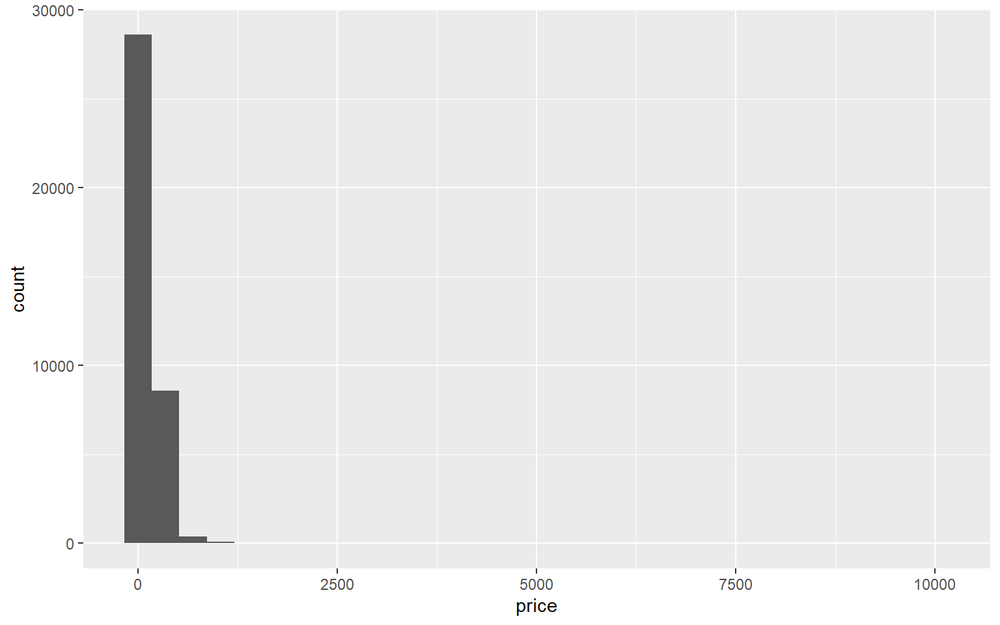
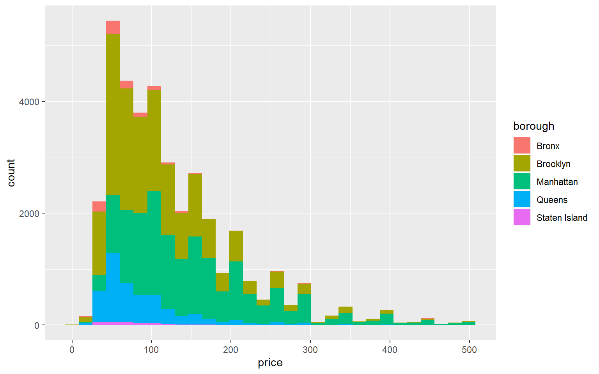
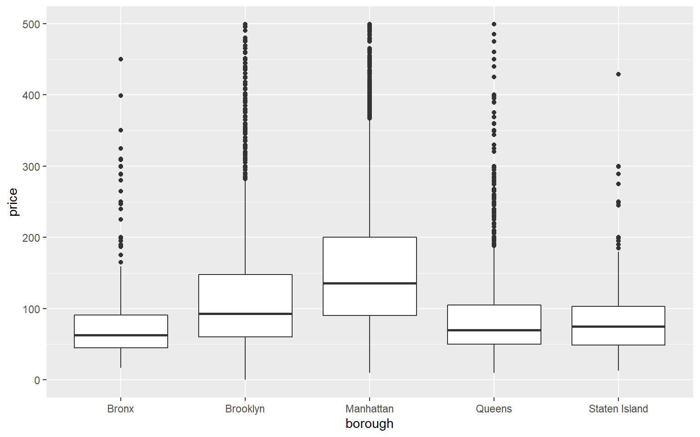
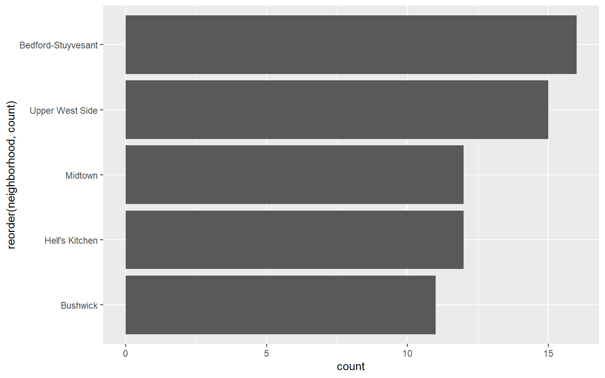

Beyond Spreadsheets: R for MBAs
Exploring New York City’s Airbnb Listings
Beyond Spreadsheets: R for MBAs
Goals
- Get a feel for what R is all about
- Get familiar with an analysis workflow that goes beyond Excel
- Learn some powerful techniques of exploring a large-ish dataset
We’ll do these by taking a close look at some interesting data: the Airbnb listings in New York City as of August 2019.
It’s okay if you can’t start using these techniques right away after the workshop. To be comfortable with a tool like R takes some time and practice. Your exposure today to these tools and techniques will likely show you R’s possibilities and motivate you to keep learning.I suggest some learning resources at the end of this document.
RStudio
RStudio is a free program that makes writing R code much more enjoyable and efficient. Strictly speaking, you don’t need it to write R code, but I highly recommend you use RStudio.
It has four main panes. This one — assuming you’re reading this on RStudio — is the “code editor” (also known as “script editor” and “source editor”). This is where we’ll spend most of our time. I’ll describe the other panes later.
R Notebook
Before starting our analysis, let’s understand how this document works. (I’m assuming you’re reading this on RStudio.)
This document is an R Notebook. An R Notebook contains commentary interspersed with code chunks. The code chunks can be run (executed) independently and interactively. The output will appear below the code chunk. R Notebooks are easy to convert to well-formatted final documents as a pdf file, a webpage, or an MS Word file. More here
What you’re reading is commentary and what you see below is the container for a code chunk.
To run a code chunk, click on the little triangle at the right edge of the code chunk. Or, use the keyboard shortcut CTRL + SHIFT + ENTER (Windows) or CMD + SHIFT + ENTER (Mac).
🏏 Run the chunk below and see what happens.
## [1] 12Do you see some output below the code chunk? This way you can immediately see the result of your code as you work on your analysis.
(Do you know what’s going on in the code above? We’ll talk about variables and assignments later.)
Feel free to add your commentary and code anywhere in this document. You can always download the unmodified version.
To write your own code chunk, look for the insert button above and then select R. Or, use the keyboard shortcut CTRL + ALT + I (Windows) or CMD + OPTION + I (Mac).
🏏 Place the cursor below and create a container for writing code. Now write some code and run it. For example, find the result of 3543 / 562.
The Data
The dataset contains almost all the Airbnb listings in NYC as of August 2019. The data came from Inside Airbnb.
It’s always a good idea to approach a new dataset with a few basic questions. Some examples:
- What kind of data is here? What are the variables? How many observations?
- Who collected these data? How? Why?
- How accurate are these data?
- How complete are these data? Are there too many missing values?
- Do I have the legal rights to use these data? Under what conditions?
Here’s some background information that may answer some of these questions.
Let’s take a look at the data. Open the Excel file in the data folder. Browse around a bit.
🤔 Can you explain what each column is about?
🤔 What’s the first thing you’d like to find out from these data?
🤔 What do you think about the quality of the data?
The Context
Data analysis happens within a broader context. Usually, there’s an overarching business, policy, or scientific question that one would like to answer. Often, though, the question is not very clear. Whatever the case, you need to approach the data with curiosity about the larger context.
The more you understand the context of the data, the better will be your questions and hypotheses guiding your analysis.
For our dataset, we should have a good understanding of the business model of Airbnb as well as the economy and geography of NYC.
🤔 Is there anything else we should know about?
Airbnb
🤔 How much do I need to know about Airbnb and its business? Is my personal experience with Airbnb enough? What if I don’t have any personal experience?
New York City
We can start with a map of the city.

The map gives us an idea about the relative size and location of the five boroughs of NYC.
🤔 What else do we know about these boroughs? What about the neighborhoods within the boroughs?
Prepare to Analyze
Install and load packages
We’ll first install a few packages that we’ll need at different stages of the analysis. This may take a minute or two.
The symbol # at the start of a line means the line is a comment. These lines are left alone (that is, not executed) when you run a code chunk. You can use comments either to explain your code within a code chunk or to temporarily prevent a line of code from executing.
If the lines containing install.packages are “commented out,” please remove the #s before running the code chunk.
# For loading data
# install.packages("readr")
# # For data manipulation (we'll spend most time with this one)
# install.packages("dplyr")
# # For visualization
# install.packages("ggplot2")
# # To work with date and time
# install.packages("lubridate")And then we load the packages for our current R session. After these packages are successfully loaded, all the functions in these packages will be available for our use.
Load and prepare data
We’ll use the function read_csv — which comes from the package readr — to load data from a file and convert the data into a dataframe. A dataframe is a tabular data structure, with columns as variables and rows as observations. In this case, the dataframe looks exactly as it does in the CSV file.
🤔 What’s a CSV file?
🤔 What are some other formats used for storing data?
🤔 What can I do if my data is in a format I’m not familiar with? [hint: Google, package, function]
## Parsed with column specification:
## cols(
## .default = col_double(),
## listing_url = col_character(),
## name = col_character(),
## description = col_character(),
## host_name = col_character(),
## host_since = col_character(),
## host_response_time = col_character(),
## host_response_rate = col_character(),
## host_is_superhost = col_logical(),
## host_verifications = col_character(),
## host_identity_verified = col_logical(),
## neighborhood = col_character(),
## borough = col_character(),
## property_type = col_character(),
## bed_type = col_character(),
## calendar_updated = col_character(),
## has_availability = col_logical(),
## instant_bookable = col_logical(),
## is_business_travel_ready = col_logical(),
## cancellation_policy = col_character()
## )## See spec(...) for full column specifications.## Warning: 16 parsing failures.
## row col expected actual file
## 2197 zipcode a double NY 10011 'data/airbnb_nyc_data.csv'
## 2330 zipcode a double NY 10011 'data/airbnb_nyc_data.csv'
## 20559 zipcode no trailing characters
## 11249 'data/airbnb_nyc_data.csv'
## 23281 zipcode no trailing characters -2308 'data/airbnb_nyc_data.csv'
## 25894 zipcode no trailing characters -3233 'data/airbnb_nyc_data.csv'
## ..... ....... ...................... ......... ..........................
## See problems(...) for more details.The first thing to check is whether the data have been successfully loaded and assigned to the variable (here df). We don’t see any error — which is a good sign. We can also see the variable df in the environment pane (usually to the right of this code editor pane – click on “Environment” if hidden).
The next thing to check is whether read_csv was able to correctly infer the data type of each variable.
For a better glimpse, use the function glimpse.
🤔 How am I supposed to know what functions are out there?
## Observations: 37,762
## Variables: 44
## $ id <dbl> 1925519, 4244476, 6031895, 6887405...
## $ listing_url <chr> "https://www.airbnb.com/rooms/1925...
## $ name <chr> "Sublet: $490/Wk", "Sunny and Funk...
## $ description <chr> "$490/week. Huge 1 bedroom / 2bdr ...
## $ host_id <dbl> 2765870, 782008, 6396863, 11081099...
## $ host_name <chr> "Amarie2131", "Lori", "Tianhui", "...
## $ host_since <chr> "6/27/2012", "7/5/2011", "5/14/201...
## $ host_response_time <chr> "N/A", "N/A", "N/A", "N/A", "N/A",...
## $ host_response_rate <chr> "N/A", "N/A", "N/A", "N/A", "N/A",...
## $ host_is_superhost <lgl> FALSE, FALSE, FALSE, FALSE, FALSE,...
## $ host_total_listings_count <dbl> 1, 1, 1, 2, 5, 1, 1, 1, 1, 1, 1, 3...
## $ host_verifications <chr> "['email', 'phone', 'facebook', 'r...
## $ host_identity_verified <lgl> TRUE, TRUE, FALSE, TRUE, TRUE, TRU...
## $ neighborhood <chr> "Lower East Side", "Greenpoint", "...
## $ borough <chr> "Manhattan", "Brooklyn", "Manhatta...
## $ zipcode <dbl> 10002, 11222, 10019, 10031, 11206,...
## $ property_type <chr> "Apartment", "Apartment", "Apartme...
## $ accommodates <dbl> 1, 2, 1, 2, 2, 2, 2, 2, 2, 2, 2, 4...
## $ bathrooms <dbl> 1.0, 1.0, 1.0, 1.0, 2.0, 1.0, 1.0,...
## $ bedrooms <dbl> 1, 1, 1, 1, 1, 1, 1, 1, 1, 1, 0, 1...
## $ beds <dbl> 1, 1, 1, 1, 1, 2, 1, 1, 1, 2, 1, 2...
## $ bed_type <chr> "Real Bed", "Real Bed", "Airbed", ...
## $ price <dbl> 80, 75, 60, 50, 50, 50, 85, 80, 35...
## $ security_deposit <dbl> NA, NA, 400, 700, NA, NA, NA, NA, ...
## $ cleaning_fee <dbl> NA, NA, NA, 25, NA, NA, NA, NA, NA...
## $ guests_included <dbl> 1, 1, 1, 1, 1, 1, 1, 1, 1, 1, 1, 1...
## $ extra_people <dbl> 0, 0, 0, 0, 0, 0, 0, 0, 0, 0, 0, 0...
## $ minimum_nights <dbl> 1, 1, 1, 1, 1, 1, 1, 1, 1, 1, 7, 2...
## $ calendar_updated <chr> "43 months ago", "24 months ago", ...
## $ has_availability <lgl> TRUE, TRUE, TRUE, TRUE, TRUE, TRUE...
## $ availability_365 <dbl> 0, 0, 0, 0, 0, 0, 0, 0, 0, 87, 0, ...
## $ number_of_reviews <dbl> 1, 1, 1, 1, 1, 1, 1, 1, 1, 1, 1, 1...
## $ number_of_reviews_ltm <dbl> 0, 0, 0, 0, 0, 0, 0, 0, 0, 0, 0, 0...
## $ review_scores_rating <dbl> 20, 20, 20, 20, 20, 20, 20, 20, 20...
## $ review_scores_accuracy <dbl> 6, 2, 6, 6, 2, 2, 2, NA, 2, 8, 10,...
## $ review_scores_cleanliness <dbl> 2, 2, 2, 2, 2, 8, 2, NA, 2, 8, 2, ...
## $ review_scores_checkin <dbl> 6, 10, 2, 10, 8, 4, 8, NA, 2, 4, 1...
## $ review_scores_communication <dbl> 6, 10, 8, 10, 8, 6, 6, NA, 6, 2, 1...
## $ review_scores_location <dbl> 10, 10, 10, 8, 8, 8, 10, NA, 4, 4,...
## $ review_scores_value <dbl> 6, 2, 4, 4, 2, 4, 2, NA, 4, 4, 4, ...
## $ instant_bookable <lgl> FALSE, TRUE, FALSE, FALSE, FALSE, ...
## $ is_business_travel_ready <lgl> FALSE, FALSE, FALSE, FALSE, FALSE,...
## $ cancellation_policy <chr> "flexible", "flexible", "moderate"...
## $ reviews_per_month <dbl> 0.02, 0.02, 0.02, 0.02, 0.02, 0.02...What you see within the angular brackets <...> next to each column name is the data type of that column.
But what are data types? And why are they important?
What exactly is a variable in programming?
What is a function?
Let’s take a detour.
Detour: Programming Concepts
Variables (programming)
In programming, a variable stores some value. Our code can then reference the name of the variable to do something with it.
We use a left-facing arrow to assign a value to a variable. The arrow looks like this: <- (the less-than sign followed by a hyphen).
For example, in the code below, foo and bar are variable names. We assigned the values 43 and "kitten" to foo and bar respectively. You can read them as foo gets 43 and bar gets "kitten".
Let’s do something with these variables.
## [1] 430## [1] "kitten"Important: The word variable can be ambiguous. You may be familiar with the term as used in statistics. For example, if some data is about people, some variables could be age, sex, income and address. The names of the columns of a dataframe are variables in the statistical sense. Usually, the context would clarify which meaning is intended.
Tip: Give short descriptive names to your variables. This will make the code easy to follow.
🏏 A room is 11 yards long and 7.5 yards wide. Assign these values to width and length variables and then calculate the area of the room. You can, of course, give different names to these variables if you wish.
Data structures
vector, list, matrix, and dataframe are some of the main data-structures for storing data in R.
Think of a vector as simply a sequence of data. For example, a column in a data table is a vector. This is how you create a vector: c(element1, element2, element3, ...)
## [1] 3 5 10 20Data types
We also need to know a little about data types. These are the main ones:
- Integer: such as 2, 543, 90.
- Double: numbers other than integers, such as 4.56, 1/33. Doubles are always approximations.
- Character: a sequence of letters, numbers, punctuation, etc., such as “rainbow”, “34265”. Character data are always written within quotes, either single or double (we’ll always use double for consistency).
- Logical: data that can take on one of only two values — TRUE or FALSE.
🤔 Why is “34265” above of the type character? What’s a real-world example of this kind of data?
There are some other important data types: - factor, for categorical variables (here “variable” in statistical sense). A categorical variable is one that can take on a limited, fixed number of values. - date-time and date
Functions
You’re familiar with Excel functions, such as sum() or average(). The concept of functions in a programming language is no different. You give some values (called parameters) to a function. The function does something with the values and returns a new value. So sum(3, 6, 1) returns 10. Here sum is the name of the function, 3, 6, 1 are parameters, and 10 is the returned value.
Most of the times, you’ll use functions written by other people. But it’s not too difficult to write your own functions. Here’s a simple one. All it does is add 10 to a given number and then return the total.
## function(num){
## new_value <- num + 10
## new_value
## }But we can’t really use the function yet. We need to give it a name. Let’s go with add10.
Now we can use this function whenever we need to add 10 to a number. (This is, of course, a toy example. In practice, a function would do much more work.)
## [1] 45We won’t write any function today. Rather, we’ll use functions that R — and the packages we loaded — make available to us. Here’s an example: the mean function, which comes preloaded in R.
# First let's create a vector
vec2 <- c(23, 53, 11, 34, 87, 100, 5, 12, 66, 9, 87, 110, 20, 33, 54, 43, 76)
# Let's calculate the mean of the vector
calculated_mean <- mean(vec2)
# Then output it with some text description
message("The mean of the vector vec2 is ", calculated_mean)## The mean of the vector vec2 is 48.4117647058824🏏 Calculate the sum, median, and standard deviation (hint: sd) of the vector vec2.
🏏 Let’s load some new data. You’ll see there are two other data files in the data folder: babynames_2018.csv and babynames_1880.csv. They contain the top 1000 names of babies born in 2018 and 1880, respectively. Load the 2018 data to a dataframe (hint: read_csv). Assign the dataframe to a variable named df_babynames (You can give a variable any name you like — but it’s always a good idea to give variables meaningful, consistent names).
🏏 Now take a look at the dataframe’s data types. (hint: glimpse)
Back to Analysis
Let’s take another look at the data types of our dataframe.
## Observations: 37,762
## Variables: 44
## $ id <dbl> 1925519, 4244476, 6031895, 6887405...
## $ listing_url <chr> "https://www.airbnb.com/rooms/1925...
## $ name <chr> "Sublet: $490/Wk", "Sunny and Funk...
## $ description <chr> "$490/week. Huge 1 bedroom / 2bdr ...
## $ host_id <dbl> 2765870, 782008, 6396863, 11081099...
## $ host_name <chr> "Amarie2131", "Lori", "Tianhui", "...
## $ host_since <chr> "6/27/2012", "7/5/2011", "5/14/201...
## $ host_response_time <chr> "N/A", "N/A", "N/A", "N/A", "N/A",...
## $ host_response_rate <chr> "N/A", "N/A", "N/A", "N/A", "N/A",...
## $ host_is_superhost <lgl> FALSE, FALSE, FALSE, FALSE, FALSE,...
## $ host_total_listings_count <dbl> 1, 1, 1, 2, 5, 1, 1, 1, 1, 1, 1, 3...
## $ host_verifications <chr> "['email', 'phone', 'facebook', 'r...
## $ host_identity_verified <lgl> TRUE, TRUE, FALSE, TRUE, TRUE, TRU...
## $ neighborhood <chr> "Lower East Side", "Greenpoint", "...
## $ borough <chr> "Manhattan", "Brooklyn", "Manhatta...
## $ zipcode <dbl> 10002, 11222, 10019, 10031, 11206,...
## $ property_type <chr> "Apartment", "Apartment", "Apartme...
## $ accommodates <dbl> 1, 2, 1, 2, 2, 2, 2, 2, 2, 2, 2, 4...
## $ bathrooms <dbl> 1.0, 1.0, 1.0, 1.0, 2.0, 1.0, 1.0,...
## $ bedrooms <dbl> 1, 1, 1, 1, 1, 1, 1, 1, 1, 1, 0, 1...
## $ beds <dbl> 1, 1, 1, 1, 1, 2, 1, 1, 1, 2, 1, 2...
## $ bed_type <chr> "Real Bed", "Real Bed", "Airbed", ...
## $ price <dbl> 80, 75, 60, 50, 50, 50, 85, 80, 35...
## $ security_deposit <dbl> NA, NA, 400, 700, NA, NA, NA, NA, ...
## $ cleaning_fee <dbl> NA, NA, NA, 25, NA, NA, NA, NA, NA...
## $ guests_included <dbl> 1, 1, 1, 1, 1, 1, 1, 1, 1, 1, 1, 1...
## $ extra_people <dbl> 0, 0, 0, 0, 0, 0, 0, 0, 0, 0, 0, 0...
## $ minimum_nights <dbl> 1, 1, 1, 1, 1, 1, 1, 1, 1, 1, 7, 2...
## $ calendar_updated <chr> "43 months ago", "24 months ago", ...
## $ has_availability <lgl> TRUE, TRUE, TRUE, TRUE, TRUE, TRUE...
## $ availability_365 <dbl> 0, 0, 0, 0, 0, 0, 0, 0, 0, 87, 0, ...
## $ number_of_reviews <dbl> 1, 1, 1, 1, 1, 1, 1, 1, 1, 1, 1, 1...
## $ number_of_reviews_ltm <dbl> 0, 0, 0, 0, 0, 0, 0, 0, 0, 0, 0, 0...
## $ review_scores_rating <dbl> 20, 20, 20, 20, 20, 20, 20, 20, 20...
## $ review_scores_accuracy <dbl> 6, 2, 6, 6, 2, 2, 2, NA, 2, 8, 10,...
## $ review_scores_cleanliness <dbl> 2, 2, 2, 2, 2, 8, 2, NA, 2, 8, 2, ...
## $ review_scores_checkin <dbl> 6, 10, 2, 10, 8, 4, 8, NA, 2, 4, 1...
## $ review_scores_communication <dbl> 6, 10, 8, 10, 8, 6, 6, NA, 6, 2, 1...
## $ review_scores_location <dbl> 10, 10, 10, 8, 8, 8, 10, NA, 4, 4,...
## $ review_scores_value <dbl> 6, 2, 4, 4, 2, 4, 2, NA, 4, 4, 4, ...
## $ instant_bookable <lgl> FALSE, TRUE, FALSE, FALSE, FALSE, ...
## $ is_business_travel_ready <lgl> FALSE, FALSE, FALSE, FALSE, FALSE,...
## $ cancellation_policy <chr> "flexible", "flexible", "moderate"...
## $ reviews_per_month <dbl> 0.02, 0.02, 0.02, 0.02, 0.02, 0.02...Some of the data types don’t look right. Let’s correct them.
🤔 why is it important to have the correct data type?
But, first, let’s learn how to reference a column in a dataframe: first the name of the dataframe, then $ and then the column name. For example: df$cancellation_policy or df_babynames$name.
To change data type, we apply the relevant function, such as.character or as.factor, to a column and then assign the output of the function (values with changed data type) to the same column.
## Warning: NAs introduced by coercion🤔 What is the rationale for each of these changes?
Side note: The last function mdy is different from the others. Normally, working with date-time in R (and in programming in general) is not simple. The lubridate package, which we loaded earlier, makes the job much easier. We’ll not go into the details of date-times. What we did here with mdy is convert character data into date data. We used mdy because the character data were in the form month-date-year. If they were in the form, for example, year-month-date, we would’ve used the function ymd.
🏏 Change the data type of any other variables you think necessary.
Missing values
Let’s inspect our data for missing values using the function summary, which will give us plenty of other relevant information as well.
## id listing_url name
## Min. : 2595 Length:37762 Length:37762
## 1st Qu.: 8775486 Class :character Class :character
## Median :19047199 Mode :character Mode :character
## Mean :18350954
## 3rd Qu.:27964916
## Max. :37447887
##
## description host_id host_name
## Length:37762 Length:37762 Length:37762
## Class :character Class :character Class :character
## Mode :character Mode :character Mode :character
##
##
##
##
## host_since host_response_time host_response_rate
## Min. :2008-08-27 Length:37762 Min. :0.00
## 1st Qu.:2013-06-26 Class :character 1st Qu.:0.97
## Median :2015-03-14 Mode :character Median :1.00
## Mean :2015-03-13 Mean :0.94
## 3rd Qu.:2016-11-22 3rd Qu.:1.00
## Max. :2019-08-02 Max. :1.00
## NA's :14 NA's :10601
## host_is_superhost host_total_listings_count host_verifications
## Mode :logical Min. : 0.000 Length:37762
## FALSE:28654 1st Qu.: 1.000 Class :character
## TRUE :9094 Median : 1.000 Mode :character
## NA's :14 Mean : 7.874
## 3rd Qu.: 2.000
## Max. :1080.000
## NA's :14
## host_identity_verified neighborhood borough
## Mode :logical Length:37762 Length:37762
## FALSE:18355 Class :character Class :character
## TRUE :19393 Mode :character Mode :character
## NA's :14
##
##
##
## zipcode property_type accommodates bathrooms
## Min. : 7093 Apartment :29582 Min. : 1.000 Min. : 0.000
## 1st Qu.:10025 House : 3190 1st Qu.: 2.000 1st Qu.: 1.000
## Median :11201 Townhouse : 1425 Median : 2.000 Median : 1.000
## Mean :10703 Loft : 1174 Mean : 2.901 Mean : 1.136
## 3rd Qu.:11221 Condominium: 1123 3rd Qu.: 4.000 3rd Qu.: 1.000
## Max. :91766 Guest suite: 324 Max. :20.000 Max. :15.500
## NA's :403 (Other) : 944 NA's :44
## bedrooms beds bed_type price
## Min. : 0.000 Min. : 0.000 Length:37762 Min. : 0
## 1st Qu.: 1.000 1st Qu.: 1.000 Class :character 1st Qu.: 69
## Median : 1.000 Median : 1.000 Mode :character Median : 100
## Mean : 1.177 Mean : 1.571 Mean : 141
## 3rd Qu.: 1.000 3rd Qu.: 2.000 3rd Qu.: 169
## Max. :14.000 Max. :40.000 Max. :10000
## NA's :18 NA's :19
## security_deposit cleaning_fee guests_included extra_people
## Min. : 0.0 Min. : 0.00 Min. : 1.000 Min. : 0.00
## 1st Qu.: 0.0 1st Qu.: 25.00 1st Qu.: 1.000 1st Qu.: 0.00
## Median : 100.0 Median : 50.00 Median : 1.000 Median : 10.00
## Mean : 252.8 Mean : 62.93 Mean : 1.587 Mean : 16.12
## 3rd Qu.: 300.0 3rd Qu.: 90.00 3rd Qu.: 2.000 3rd Qu.: 25.00
## Max. :5100.0 Max. :1000.00 Max. :16.000 Max. :300.00
## NA's :11349 NA's :5945
## minimum_nights calendar_updated has_availability availability_365
## Min. : 1.000 Length:37762 Mode:logical Min. : 0.0
## 1st Qu.: 1.000 Class :character TRUE:37762 1st Qu.: 0.0
## Median : 2.000 Mode :character Median : 53.0
## Mean : 5.864 Mean :115.5
## 3rd Qu.: 4.000 3rd Qu.:237.0
## Max. :1250.000 Max. :365.0
##
## number_of_reviews number_of_reviews_ltm review_scores_rating
## Min. : 1.00 Min. : 0.00 Min. : 20.00
## 1st Qu.: 3.00 1st Qu.: 1.00 1st Qu.: 92.00
## Median : 10.00 Median : 4.00 Median : 96.00
## Mean : 30.24 Mean : 11.83 Mean : 93.93
## 3rd Qu.: 35.00 3rd Qu.: 17.00 3rd Qu.:100.00
## Max. :639.00 Max. :359.00 Max. :100.00
## NA's :4
## review_scores_accuracy review_scores_cleanliness review_scores_checkin
## Min. : 2.00 Min. : 2.000 Min. : 2.000
## 1st Qu.: 9.00 1st Qu.: 9.000 1st Qu.:10.000
## Median :10.00 Median :10.000 Median :10.000
## Mean : 9.62 Mean : 9.278 Mean : 9.749
## 3rd Qu.:10.00 3rd Qu.:10.000 3rd Qu.:10.000
## Max. :10.00 Max. :10.000 Max. :10.000
## NA's :44 NA's :28 NA's :60
## review_scores_communication review_scores_location review_scores_value
## Min. : 2.000 Min. : 2.000 Min. : 2.000
## 1st Qu.:10.000 1st Qu.: 9.000 1st Qu.: 9.000
## Median :10.000 Median :10.000 Median :10.000
## Mean : 9.756 Mean : 9.567 Mean : 9.399
## 3rd Qu.:10.000 3rd Qu.:10.000 3rd Qu.:10.000
## Max. :10.000 Max. :10.000 Max. :10.000
## NA's :38 NA's :65 NA's :63
## instant_bookable is_business_travel_ready cancellation_policy
## Mode :logical Mode :logical Length:37762
## FALSE:23618 FALSE:37762 Class :character
## TRUE :14144 Mode :character
##
##
##
##
## reviews_per_month
## Min. : 0.010
## 1st Qu.: 0.200
## Median : 0.740
## Mean : 1.394
## 3rd Qu.: 2.060
## Max. :66.610
## 🤔 Should we worry about missing values?
There are a few options for dealing with missing values.
- We can drop all rows that have one or more missing values.
- Drop rows that have missing values in particular columns.
- Replace the missing values with some other value.
- Do nothing, but do remember to take care of them when running arithmetic operations. (explained later)
In our case, we’ll go with the last option.
🤔 Is the last option the best for our dataset? What would be a better alternative?
A Set of Verbs
Finally, we’re ready to dive into the data. We’ll use six functions — think of them as six verbs — to slice and dice the data in all kinds of ways. These functions come from the dplyr package. They are:
- filter
- select
- mutate
- arrange
- summarize
- group_by
We’ll first learn these functions one by one and later we’ll learn how to combine them for rich analysis.
For each of these functions, we provide the name of the dataframe as the first parameter. The subsequent parameters inform what the function is to do with the dataframe.
Verb: filter
You use filter, when you want a subset of the rows based on one or more conditions. The returned rows will be those that meet the condition(s).
The syntax is: filter(name_of_dataframe, condition1, condition2, ...)
Use these logical operators to create the conditions:
< less than
<= less than or equal to
> greater than
>= greater than or equal to
== exactly equal to
!= not equal to
!x Not x
x | y x OR y
x & y x AND yExample: Return a dataframe with only those rows where the neighborhood is Chelsea.
## # A tibble: 796 x 44
## id listing_url name description host_id host_name host_since
## <dbl> <chr> <chr> <chr> <chr> <chr> <date>
## 1 2.08e7 https://ww~ Huge~ One of a k~ 6433797 Marlon 2013-05-17
## 2 3.27e7 https://ww~ Huge~ Larger tha~ 244559~ Stewart ~ 2019-02-21
## 3 3.40e7 https://ww~ Beau~ Beautiful ~ 234227~ Emma 2019-01-03
## 4 3.37e7 https://ww~ Midt~ This 158 s~ 252604~ Erin 2019-04-01
## 5 3.42e7 https://ww~ Amaz~ This wonde~ 174313~ Plamen 2018-02-20
## 6 1.87e6 https://ww~ Big ~ The big ro~ 9751988 Asuka 2013-11-01
## 7 3.27e7 https://ww~ Larg~ Looking fo~ 244559~ Stewart ~ 2019-02-21
## 8 1.37e7 https://ww~ Brig~ My light-f~ 803159~ Meghan 2016-06-27
## 9 1.95e6 https://ww~ 1BD ~ A cozy hom~ 100713~ Trevor 2013-11-17
## 10 1.91e7 https://ww~ Cozy~ Cozy Effic~ 829201~ Zach 2016-07-10
## # ... with 786 more rows, and 37 more variables: host_response_time <chr>,
## # host_response_rate <dbl>, host_is_superhost <lgl>,
## # host_total_listings_count <dbl>, host_verifications <chr>,
## # host_identity_verified <lgl>, neighborhood <chr>, borough <chr>,
## # zipcode <dbl>, property_type <fct>, accommodates <dbl>,
## # bathrooms <dbl>, bedrooms <dbl>, beds <dbl>, bed_type <chr>,
## # price <dbl>, security_deposit <dbl>, cleaning_fee <dbl>,
## # guests_included <dbl>, extra_people <dbl>, minimum_nights <dbl>,
## # calendar_updated <chr>, has_availability <lgl>,
## # availability_365 <dbl>, number_of_reviews <dbl>,
## # number_of_reviews_ltm <dbl>, review_scores_rating <dbl>,
## # review_scores_accuracy <dbl>, review_scores_cleanliness <dbl>,
## # review_scores_checkin <dbl>, review_scores_communication <dbl>,
## # review_scores_location <dbl>, review_scores_value <dbl>,
## # instant_bookable <lgl>, is_business_travel_ready <lgl>,
## # cancellation_policy <chr>, reviews_per_month <dbl>Example: Return a dataframe with only those rows where the price is more than 8000.
## # A tibble: 5 x 44
## id listing_url name description host_id host_name host_since
## <dbl> <chr> <chr> <chr> <chr> <chr> <date>
## 1 9.53e6 https://ww~ Quie~ This priva~ 3906464 Amy 2012-10-17
## 2 1.39e7 https://ww~ Luxu~ Our luxury~ 5143901 Erin 2013-02-19
## 3 4.74e6 https://ww~ Span~ 4 minute w~ 1235070 Olson 2011-10-01
## 4 7.00e6 https://ww~ Furn~ 1 room wit~ 205828~ Kathrine 2014-08-26
## 5 2.34e7 https://ww~ Beau~ The perfec~ 181284~ Rum 2014-07-15
## # ... with 37 more variables: host_response_time <chr>,
## # host_response_rate <dbl>, host_is_superhost <lgl>,
## # host_total_listings_count <dbl>, host_verifications <chr>,
## # host_identity_verified <lgl>, neighborhood <chr>, borough <chr>,
## # zipcode <dbl>, property_type <fct>, accommodates <dbl>,
## # bathrooms <dbl>, bedrooms <dbl>, beds <dbl>, bed_type <chr>,
## # price <dbl>, security_deposit <dbl>, cleaning_fee <dbl>,
## # guests_included <dbl>, extra_people <dbl>, minimum_nights <dbl>,
## # calendar_updated <chr>, has_availability <lgl>,
## # availability_365 <dbl>, number_of_reviews <dbl>,
## # number_of_reviews_ltm <dbl>, review_scores_rating <dbl>,
## # review_scores_accuracy <dbl>, review_scores_cleanliness <dbl>,
## # review_scores_checkin <dbl>, review_scores_communication <dbl>,
## # review_scores_location <dbl>, review_scores_value <dbl>,
## # instant_bookable <lgl>, is_business_travel_ready <lgl>,
## # cancellation_policy <chr>, reviews_per_month <dbl>You can combine multiple conditions.
Example: Return a dataframe with rows where the borough is Manhattan and the price is less than 50.
## # A tibble: 520 x 44
## id listing_url name description host_id host_name host_since
## <dbl> <chr> <chr> <chr> <chr> <chr> <date>
## 1 3.27e7 https://ww~ Slee~ Traveling ~ 163749~ Brianna 2017-12-22
## 2 3.50e7 https://ww~ Big ~ My beautif~ 19342 Rivka 2009-05-29
## 3 2.18e7 https://ww~ Priv~ Come stay ~ 5742326 Dina 2013-04-02
## 4 1.40e7 https://ww~ Room~ My place i~ 759164~ Juan 2016-06-05
## 5 2.97e7 https://ww~ New ~ Traveling ~ 223248~ Julia 2018-10-29
## 6 3.41e7 https://ww~ Clea~ This listi~ 427679~ Shara 2015-08-28
## 7 8.34e5 https://ww~ Larg~ Great reno~ 4112404 Vero 2012-11-10
## 8 2.19e7 https://ww~ Spac~ Spacious a~ 505228~ Nora 2015-12-04
## 9 3.06e6 https://ww~ Furn~ $1035/mont~ 7101220 David 2013-06-25
## 10 5.36e6 https://ww~ Beau~ A spacious~ 277906~ Carl 2015-02-15
## # ... with 510 more rows, and 37 more variables: host_response_time <chr>,
## # host_response_rate <dbl>, host_is_superhost <lgl>,
## # host_total_listings_count <dbl>, host_verifications <chr>,
## # host_identity_verified <lgl>, neighborhood <chr>, borough <chr>,
## # zipcode <dbl>, property_type <fct>, accommodates <dbl>,
## # bathrooms <dbl>, bedrooms <dbl>, beds <dbl>, bed_type <chr>,
## # price <dbl>, security_deposit <dbl>, cleaning_fee <dbl>,
## # guests_included <dbl>, extra_people <dbl>, minimum_nights <dbl>,
## # calendar_updated <chr>, has_availability <lgl>,
## # availability_365 <dbl>, number_of_reviews <dbl>,
## # number_of_reviews_ltm <dbl>, review_scores_rating <dbl>,
## # review_scores_accuracy <dbl>, review_scores_cleanliness <dbl>,
## # review_scores_checkin <dbl>, review_scores_communication <dbl>,
## # review_scores_location <dbl>, review_scores_value <dbl>,
## # instant_bookable <lgl>, is_business_travel_ready <lgl>,
## # cancellation_policy <chr>, reviews_per_month <dbl>Example: Return a dataframe with rows where cancellation_policy is flexible or accommodates more than 2.
## # A tibble: 21,439 x 44
## id listing_url name description host_id host_name host_since
## <dbl> <chr> <chr> <chr> <chr> <chr> <date>
## 1 1.93e6 https://ww~ Subl~ $490/week.~ 2765870 Amarie21~ 2012-06-27
## 2 4.24e6 https://ww~ Sunn~ It's a sma~ 782008 Lori 2011-07-05
## 3 8.81e6 https://ww~ Spac~ Loft room ~ 133181~ Rebecca 2014-03-19
## 4 9.21e6 https://ww~ Clea~ Its a spar~ 478863~ Megan 2015-11-01
## 5 9.35e6 https://ww~ Cute~ This is a ~ 393330~ XiWei 2015-07-23
## 6 9.73e6 https://ww~ 2nd ~ Comfortabl~ 149742~ Gabriel 2014-05-01
## 7 1.40e7 https://ww~ Cozy~ My place i~ 834766~ Carmen 2016-07-13
## 8 1.42e7 https://ww~ Peac~ "I will be~ 3602785 James 2012-09-18
## 9 1.62e7 https://ww~ 1 Be~ The Wyndha~ 695458~ Chayla 2016-04-29
## 10 1.90e7 https://ww~ Bush~ A cute com~ 604942~ Breanna 2016-02-26
## # ... with 21,429 more rows, and 37 more variables:
## # host_response_time <chr>, host_response_rate <dbl>,
## # host_is_superhost <lgl>, host_total_listings_count <dbl>,
## # host_verifications <chr>, host_identity_verified <lgl>,
## # neighborhood <chr>, borough <chr>, zipcode <dbl>, property_type <fct>,
## # accommodates <dbl>, bathrooms <dbl>, bedrooms <dbl>, beds <dbl>,
## # bed_type <chr>, price <dbl>, security_deposit <dbl>,
## # cleaning_fee <dbl>, guests_included <dbl>, extra_people <dbl>,
## # minimum_nights <dbl>, calendar_updated <chr>, has_availability <lgl>,
## # availability_365 <dbl>, number_of_reviews <dbl>,
## # number_of_reviews_ltm <dbl>, review_scores_rating <dbl>,
## # review_scores_accuracy <dbl>, review_scores_cleanliness <dbl>,
## # review_scores_checkin <dbl>, review_scores_communication <dbl>,
## # review_scores_location <dbl>, review_scores_value <dbl>,
## # instant_bookable <lgl>, is_business_travel_ready <lgl>,
## # cancellation_policy <chr>, reviews_per_month <dbl>Example: Return a dataframe with rows where number_of_reviews is not 0
## # A tibble: 37,762 x 44
## id listing_url name description host_id host_name host_since
## <dbl> <chr> <chr> <chr> <chr> <chr> <date>
## 1 1.93e6 https://ww~ Subl~ $490/week.~ 2765870 Amarie21~ 2012-06-27
## 2 4.24e6 https://ww~ Sunn~ It's a sma~ 782008 Lori 2011-07-05
## 3 6.03e6 https://ww~ Priv~ - Private ~ 6396863 Tianhui 2013-05-14
## 4 6.89e6 https://ww~ Priv~ Our Hamilt~ 110810~ Rob 2014-01-06
## 5 8.81e6 https://ww~ Spac~ Loft room ~ 133181~ Rebecca 2014-03-19
## 6 9.21e6 https://ww~ Clea~ Its a spar~ 478863~ Megan 2015-11-01
## 7 9.35e6 https://ww~ Cute~ This is a ~ 393330~ XiWei 2015-07-23
## 8 9.51e6 https://ww~ Apar~ I only ren~ 492863~ Tairan 2015-11-17
## 9 9.73e6 https://ww~ 2nd ~ Comfortabl~ 149742~ Gabriel 2014-05-01
## 10 1.40e7 https://ww~ Cozy~ My place i~ 834766~ Carmen 2016-07-13
## # ... with 37,752 more rows, and 37 more variables:
## # host_response_time <chr>, host_response_rate <dbl>,
## # host_is_superhost <lgl>, host_total_listings_count <dbl>,
## # host_verifications <chr>, host_identity_verified <lgl>,
## # neighborhood <chr>, borough <chr>, zipcode <dbl>, property_type <fct>,
## # accommodates <dbl>, bathrooms <dbl>, bedrooms <dbl>, beds <dbl>,
## # bed_type <chr>, price <dbl>, security_deposit <dbl>,
## # cleaning_fee <dbl>, guests_included <dbl>, extra_people <dbl>,
## # minimum_nights <dbl>, calendar_updated <chr>, has_availability <lgl>,
## # availability_365 <dbl>, number_of_reviews <dbl>,
## # number_of_reviews_ltm <dbl>, review_scores_rating <dbl>,
## # review_scores_accuracy <dbl>, review_scores_cleanliness <dbl>,
## # review_scores_checkin <dbl>, review_scores_communication <dbl>,
## # review_scores_location <dbl>, review_scores_value <dbl>,
## # instant_bookable <lgl>, is_business_travel_ready <lgl>,
## # cancellation_policy <chr>, reviews_per_month <dbl>Note: when multiple conditions are separated by commas, the conditions are assumed to have and logical operator between them. Using & instead would be the same thing. For or and other logical operators, we have to explicitly use the appropriate logical operator (e.g. | for or).
🏏 Return a dataframe with rows where number of bedrooms is not 1 and property_type is House
🏏 Return a dataframe with rows where host_response_time is within an hour or host_response_rate is more than 90% or calendar was updated today
Verb: select
Our second verb is select, which is used to return a subset of the columns.
The syntax is: select(name_of_dataframe, name_of_column1, name_of_column2, ...)
There are some variations to this syntax, which come in handy in certain situations.
- If you want all columns except one:
select(name_of_dataframe, -column_to_exclude) - If you want all columns except two:
select(name_of_dataframe, -c(column_to_exlude1, column_to_exclue2)) - If you want the third through eighth columns:
select(name_of_dataframe, 3:8)
Example: Return a dataframe with only the listing_url column.
## # A tibble: 37,762 x 1
## listing_url
## <chr>
## 1 https://www.airbnb.com/rooms/1925519
## 2 https://www.airbnb.com/rooms/4244476
## 3 https://www.airbnb.com/rooms/6031895
## 4 https://www.airbnb.com/rooms/6887405
## 5 https://www.airbnb.com/rooms/8807842
## 6 https://www.airbnb.com/rooms/9207023
## 7 https://www.airbnb.com/rooms/9345523
## 8 https://www.airbnb.com/rooms/9511685
## 9 https://www.airbnb.com/rooms/9732432
## 10 https://www.airbnb.com/rooms/13987276
## # ... with 37,752 more rowsExample: Return a dataframe with columns host_response_time, cancellation_policy, and neighborhood.
## # A tibble: 37,762 x 3
## host_response_time cancellation_policy neighborhood
## <chr> <chr> <chr>
## 1 N/A flexible Lower East Side
## 2 N/A flexible Greenpoint
## 3 N/A moderate Theater District
## 4 N/A moderate Harlem
## 5 N/A flexible Williamsburg
## 6 N/A flexible Midwood
## 7 N/A flexible East Village
## 8 N/A moderate Stuyvesant Town
## 9 N/A flexible Bushwick
## 10 N/A flexible Harlem
## # ... with 37,752 more rowsExample: Return a dataframe with second through fourth columns
## # A tibble: 37,762 x 3
## listing_url name description
## <chr> <chr> <chr>
## 1 https://www.airbnb.c~ Sublet: $490/Wk $490/week. Huge 1 bedroom / 2bd~
## 2 https://www.airbnb.c~ Sunny and Funky ~ It's a smaller room with an des~
## 3 https://www.airbnb.c~ Private Bedroom ~ - Private bedroom in 2 person a~
## 4 https://www.airbnb.c~ Private Room in ~ Our Hamilton Heights 3BR featur~
## 5 https://www.airbnb.c~ Spacious arty lo~ Loft room in a spacious apartme~
## 6 https://www.airbnb.c~ Clean private ro~ Its a spare bedroom with lots o~
## 7 https://www.airbnb.c~ Cute Private Bed~ This is a private bedroom in a ~
## 8 https://www.airbnb.c~ Apartment in Stu~ I only rent my room for my apar~
## 9 https://www.airbnb.c~ 2nd floor bedroo~ Comfortable bedroom in a recent~
## 10 https://www.airbnb.c~ Cozy, two bedroo~ My place is close to Harlem Pub~
## # ... with 37,752 more rows🏏 Return a dataframe with property_type, room_type, and zip_code columns.
🏏 Return a dataframe with the last 23 columns (sixth through 28th)
🏏 What would be another way of getting the same dataframe?
Piping
Before I introduce the third verb, let’s take another detour.
You can’t accomplish a lot with filter and select in isolation. Let’s combine them.
Here, we’re creating a new dataframe df_expensive by using filter and then we’re selecting some columns of interest from that dataframe.
## # A tibble: 5 x 3
## price neighborhood listing_url
## <dbl> <chr> <chr>
## 1 9999 Lower East Side https://www.airbnb.com/rooms/9528920
## 2 10000 Greenpoint https://www.airbnb.com/rooms/13894339
## 3 9999 East Harlem https://www.airbnb.com/rooms/4737930
## 4 10000 Astoria https://www.airbnb.com/rooms/7003697
## 5 8500 Tribeca https://www.airbnb.com/rooms/23377410🤔 More than $8000 per night? What’s going on here? How can we find out more? What should we do with this kind of outliers?
The above code could be written more succinctly by using pipe %>%.
## # A tibble: 5 x 3
## price neighborhood listing_url
## <dbl> <chr> <chr>
## 1 9999 Lower East Side https://www.airbnb.com/rooms/9528920
## 2 10000 Greenpoint https://www.airbnb.com/rooms/13894339
## 3 9999 East Harlem https://www.airbnb.com/rooms/4737930
## 4 10000 Astoria https://www.airbnb.com/rooms/7003697
## 5 8500 Tribeca https://www.airbnb.com/rooms/23377410Let’s try to understand how the pipe works.
filter and select both receive a dataframe as their first parameter (this is true for the other four main verbs as well.) Also, you may have noticed that filter and select return a dataframe (again, it’s true for the others as well). Thanks to this, we can use the pipe to string together several verbs to form a complex query.
## # A tibble: 5 x 44
## id listing_url name description host_id host_name host_since
## <dbl> <chr> <chr> <chr> <chr> <chr> <date>
## 1 9.53e6 https://ww~ Quie~ This priva~ 3906464 Amy 2012-10-17
## 2 1.39e7 https://ww~ Luxu~ Our luxury~ 5143901 Erin 2013-02-19
## 3 4.74e6 https://ww~ Span~ 4 minute w~ 1235070 Olson 2011-10-01
## 4 7.00e6 https://ww~ Furn~ 1 room wit~ 205828~ Kathrine 2014-08-26
## 5 2.34e7 https://ww~ Beau~ The perfec~ 181284~ Rum 2014-07-15
## # ... with 37 more variables: host_response_time <chr>,
## # host_response_rate <dbl>, host_is_superhost <lgl>,
## # host_total_listings_count <dbl>, host_verifications <chr>,
## # host_identity_verified <lgl>, neighborhood <chr>, borough <chr>,
## # zipcode <dbl>, property_type <fct>, accommodates <dbl>,
## # bathrooms <dbl>, bedrooms <dbl>, beds <dbl>, bed_type <chr>,
## # price <dbl>, security_deposit <dbl>, cleaning_fee <dbl>,
## # guests_included <dbl>, extra_people <dbl>, minimum_nights <dbl>,
## # calendar_updated <chr>, has_availability <lgl>,
## # availability_365 <dbl>, number_of_reviews <dbl>,
## # number_of_reviews_ltm <dbl>, review_scores_rating <dbl>,
## # review_scores_accuracy <dbl>, review_scores_cleanliness <dbl>,
## # review_scores_checkin <dbl>, review_scores_communication <dbl>,
## # review_scores_location <dbl>, review_scores_value <dbl>,
## # instant_bookable <lgl>, is_business_travel_ready <lgl>,
## # cancellation_policy <chr>, reviews_per_month <dbl>is the same as
## # A tibble: 5 x 44
## id listing_url name description host_id host_name host_since
## <dbl> <chr> <chr> <chr> <chr> <chr> <date>
## 1 9.53e6 https://ww~ Quie~ This priva~ 3906464 Amy 2012-10-17
## 2 1.39e7 https://ww~ Luxu~ Our luxury~ 5143901 Erin 2013-02-19
## 3 4.74e6 https://ww~ Span~ 4 minute w~ 1235070 Olson 2011-10-01
## 4 7.00e6 https://ww~ Furn~ 1 room wit~ 205828~ Kathrine 2014-08-26
## 5 2.34e7 https://ww~ Beau~ The perfec~ 181284~ Rum 2014-07-15
## # ... with 37 more variables: host_response_time <chr>,
## # host_response_rate <dbl>, host_is_superhost <lgl>,
## # host_total_listings_count <dbl>, host_verifications <chr>,
## # host_identity_verified <lgl>, neighborhood <chr>, borough <chr>,
## # zipcode <dbl>, property_type <fct>, accommodates <dbl>,
## # bathrooms <dbl>, bedrooms <dbl>, beds <dbl>, bed_type <chr>,
## # price <dbl>, security_deposit <dbl>, cleaning_fee <dbl>,
## # guests_included <dbl>, extra_people <dbl>, minimum_nights <dbl>,
## # calendar_updated <chr>, has_availability <lgl>,
## # availability_365 <dbl>, number_of_reviews <dbl>,
## # number_of_reviews_ltm <dbl>, review_scores_rating <dbl>,
## # review_scores_accuracy <dbl>, review_scores_cleanliness <dbl>,
## # review_scores_checkin <dbl>, review_scores_communication <dbl>,
## # review_scores_location <dbl>, review_scores_value <dbl>,
## # instant_bookable <lgl>, is_business_travel_ready <lgl>,
## # cancellation_policy <chr>, reviews_per_month <dbl>Similarly,
## # A tibble: 37,762 x 3
## price review_scores_rating listing_url
## <dbl> <dbl> <chr>
## 1 80 20 https://www.airbnb.com/rooms/1925519
## 2 75 20 https://www.airbnb.com/rooms/4244476
## 3 60 20 https://www.airbnb.com/rooms/6031895
## 4 50 20 https://www.airbnb.com/rooms/6887405
## 5 50 20 https://www.airbnb.com/rooms/8807842
## 6 50 20 https://www.airbnb.com/rooms/9207023
## 7 85 20 https://www.airbnb.com/rooms/9345523
## 8 80 20 https://www.airbnb.com/rooms/9511685
## 9 35 20 https://www.airbnb.com/rooms/9732432
## 10 150 20 https://www.airbnb.com/rooms/13987276
## # ... with 37,752 more rowsis the same as
## # A tibble: 37,762 x 3
## price review_scores_rating listing_url
## <dbl> <dbl> <chr>
## 1 80 20 https://www.airbnb.com/rooms/1925519
## 2 75 20 https://www.airbnb.com/rooms/4244476
## 3 60 20 https://www.airbnb.com/rooms/6031895
## 4 50 20 https://www.airbnb.com/rooms/6887405
## 5 50 20 https://www.airbnb.com/rooms/8807842
## 6 50 20 https://www.airbnb.com/rooms/9207023
## 7 85 20 https://www.airbnb.com/rooms/9345523
## 8 80 20 https://www.airbnb.com/rooms/9511685
## 9 35 20 https://www.airbnb.com/rooms/9732432
## 10 150 20 https://www.airbnb.com/rooms/13987276
## # ... with 37,752 more rowsThe left side of the pipe is used as the first parameter of the function on the right side of the pipe.
This is how filter, select, and such functions receive a dataframe, do something to it, return the modified dataframe and passes it on to the next function.
Here’s again the piped expression. Make sure you understand what’s going on.
## # A tibble: 5 x 3
## price review_scores_rating listing_url
## <dbl> <dbl> <chr>
## 1 9999 87 https://www.airbnb.com/rooms/9528920
## 2 10000 92 https://www.airbnb.com/rooms/13894339
## 3 9999 100 https://www.airbnb.com/rooms/4737930
## 4 10000 100 https://www.airbnb.com/rooms/7003697
## 5 8500 100 https://www.airbnb.com/rooms/23377410Verb: arrange
arrange is our third verb. (Note that I’m using verb and function interchangeably.) arrange sorts a dataframe based on the values of one or more columns.
Example: Get the same dataframe as the last code chunk. Sort it by price.
## # A tibble: 5 x 3
## price review_scores_rating listing_url
## <dbl> <dbl> <chr>
## 1 8500 100 https://www.airbnb.com/rooms/23377410
## 2 9999 87 https://www.airbnb.com/rooms/9528920
## 3 9999 100 https://www.airbnb.com/rooms/4737930
## 4 10000 92 https://www.airbnb.com/rooms/13894339
## 5 10000 100 https://www.airbnb.com/rooms/7003697Example: The same dataframe, but now in descending order of price.
df %>%
filter(price > 8000) %>%
select(price, review_scores_rating, listing_url) %>%
arrange(desc(price))## # A tibble: 5 x 3
## price review_scores_rating listing_url
## <dbl> <dbl> <chr>
## 1 10000 92 https://www.airbnb.com/rooms/13894339
## 2 10000 100 https://www.airbnb.com/rooms/7003697
## 3 9999 87 https://www.airbnb.com/rooms/9528920
## 4 9999 100 https://www.airbnb.com/rooms/4737930
## 5 8500 100 https://www.airbnb.com/rooms/23377410Example: You can add more columns to arrange. Now when price is the same, the order will be based on neighborhood.
df %>%
filter(price > 8000) %>%
select(price, neighborhood, listing_url) %>%
arrange(desc(price), neighborhood)## # A tibble: 5 x 3
## price neighborhood listing_url
## <dbl> <chr> <chr>
## 1 10000 Astoria https://www.airbnb.com/rooms/7003697
## 2 10000 Greenpoint https://www.airbnb.com/rooms/13894339
## 3 9999 East Harlem https://www.airbnb.com/rooms/4737930
## 4 9999 Lower East Side https://www.airbnb.com/rooms/9528920
## 5 8500 Tribeca https://www.airbnb.com/rooms/23377410🏏 Return the whole dataframe df, in descending order of number of bedrooms and where number of bedrooms are equal, descending order of review_scores_rating
Verb: mutate
mutate creates a new column by modifying one or more existing columns. It’s better explained by examples.
Example:
## # A tibble: 37,762 x 45
## id listing_url name description host_id host_name host_since
## <dbl> <chr> <chr> <chr> <chr> <chr> <date>
## 1 1.93e6 https://ww~ Subl~ $490/week.~ 2765870 Amarie21~ 2012-06-27
## 2 4.24e6 https://ww~ Sunn~ It's a sma~ 782008 Lori 2011-07-05
## 3 6.03e6 https://ww~ Priv~ - Private ~ 6396863 Tianhui 2013-05-14
## 4 6.89e6 https://ww~ Priv~ Our Hamilt~ 110810~ Rob 2014-01-06
## 5 8.81e6 https://ww~ Spac~ Loft room ~ 133181~ Rebecca 2014-03-19
## 6 9.21e6 https://ww~ Clea~ Its a spar~ 478863~ Megan 2015-11-01
## 7 9.35e6 https://ww~ Cute~ This is a ~ 393330~ XiWei 2015-07-23
## 8 9.51e6 https://ww~ Apar~ I only ren~ 492863~ Tairan 2015-11-17
## 9 9.73e6 https://ww~ 2nd ~ Comfortabl~ 149742~ Gabriel 2014-05-01
## 10 1.40e7 https://ww~ Cozy~ My place i~ 834766~ Carmen 2016-07-13
## # ... with 37,752 more rows, and 38 more variables:
## # host_response_time <chr>, host_response_rate <dbl>,
## # host_is_superhost <lgl>, host_total_listings_count <dbl>,
## # host_verifications <chr>, host_identity_verified <lgl>,
## # neighborhood <chr>, borough <chr>, zipcode <dbl>, property_type <fct>,
## # accommodates <dbl>, bathrooms <dbl>, bedrooms <dbl>, beds <dbl>,
## # bed_type <chr>, price <dbl>, security_deposit <dbl>,
## # cleaning_fee <dbl>, guests_included <dbl>, extra_people <dbl>,
## # minimum_nights <dbl>, calendar_updated <chr>, has_availability <lgl>,
## # availability_365 <dbl>, number_of_reviews <dbl>,
## # number_of_reviews_ltm <dbl>, review_scores_rating <dbl>,
## # review_scores_accuracy <dbl>, review_scores_cleanliness <dbl>,
## # review_scores_checkin <dbl>, review_scores_communication <dbl>,
## # review_scores_location <dbl>, review_scores_value <dbl>,
## # instant_bookable <lgl>, is_business_travel_ready <lgl>,
## # cancellation_policy <chr>, reviews_per_month <dbl>,
## # price_per_person <dbl>🏏 Create a new review_rating column, which is an average of review_scores_accuracy and review_scores_value.
Verb: summarize (or summarise)
summarize, as you’d expect, gives some kind of summary (such as mean, median, min, max) of the values of a given column.
Example: What is the total number of people that can stay in NYC Airbnbs?
## # A tibble: 1 x 1
## total_accommodates
## <dbl>
## 1 109531Here, total_accommodates is a name I’ve given to the summary number.
The common summary functions are: - sum - n (count) - mean - median - sd (standard deviation) - var (variance) - range - min - max
Note: The function n doesn’t need a parameter because it just counts the number of rows in the dataframe. This would become more clear in the examples.
We can also write our own function and use here. But that is a more advanced topic.
Example: What is the mean rating for accuracy
## # A tibble: 1 x 1
## mean_accuracy
## <dbl>
## 1 NAHmm, not exactly what we expected. This is because any arithmetic operation involving NA (that is, Not Available or missing values) results in NA.
## [1] NAOr,
## [1] NAThe review_scores_accuracy had several NAs. The correct way of doing this would be:
## # A tibble: 1 x 1
## mean_accuracy
## <dbl>
## 1 9.62na.rm = TRUE means “remove all NAs before performing arithmetic operations.”
When we summed the accommodates column earlier, we didn’t add na.rm = TRUE because that column didn’t have any NAs.
Example: We can have multiple summaries at the same time.
summarize(df, min_score_value = min(review_scores_value, na.rm = TRUE),
max_score_value = max(review_scores_value, na.rm = TRUE))## # A tibble: 1 x 2
## min_score_value max_score_value
## <dbl> <dbl>
## 1 2 10Example: What’s the total number of listings in this dataset?
## # A tibble: 1 x 1
## count
## <int>
## 1 37762🏏 The host who’s been with Airbnb NYC for the longest time started on which date?
🏏 Find the standard deviation and mean of the price variable.
🏏 Count the number of unique zip_codes in the data. Hint distinct and n.
🏏 How many listings have perfect 100 for review_scores_rating (which is the overall rating shown as stars on the listing’s webpage)?
🏏 How many listings have a perfect 100 of review_scores_rating and cost less than 50?
Verb: group_by
group_by is one of the most useful functions. It divides the data into different groups and then summarize summarizes each of the groups. This way, we can compare the different groups on various attributes.
Example: What’s the mean and median price in each of the five boroughs?
## # A tibble: 5 x 3
## borough `mean(price)` `median(price)`
## <chr> <dbl> <dbl>
## 1 Bronx 80.5 64
## 2 Brooklyn 121. 95
## 3 Manhattan 178. 140
## 4 Queens 95.1 71
## 5 Staten Island 89.3 75🏏 Return the same dataframe but sorted by mean price.
Example: Which are the top 10 neighborhoods by total number of listings?
## Selecting by count## # A tibble: 10 x 2
## neighborhood count
## <chr> <int>
## 1 Bedford-Stuyvesant 3090
## 2 Williamsburg 3082
## 3 Harlem 2155
## 4 Bushwick 1865
## 5 Hell's Kitchen 1476
## 6 East Village 1453
## 7 Upper West Side 1402
## 8 Upper East Side 1317
## 9 Crown Heights 1250
## 10 Midtown 929We introduce a new function top_n here, which returns top n rows (or bottom n rows, when n is negative) ordered by some variable. In the code chunk above, if we had top_n(-10), we would’ve got the bottom 10 rows.
Example: Which are the top two neighborhoods in each of the boroughs by number of listings?
df %>%
group_by(borough, neighborhood) %>%
summarize(count = n()) %>%
top_n(2) %>%
arrange(desc(count))## Selecting by count## # A tibble: 10 x 3
## # Groups: borough [5]
## borough neighborhood count
## <chr> <chr> <int>
## 1 Brooklyn Bedford-Stuyvesant 3090
## 2 Brooklyn Williamsburg 3082
## 3 Manhattan Harlem 2155
## 4 Manhattan Hell's Kitchen 1476
## 5 Queens Astoria 696
## 6 Queens Long Island City 417
## 7 Bronx Kingsbridge 54
## 8 Bronx Mott Haven 51
## 9 Staten Island St. George 42
## 10 Staten Island Tompkinsville 42🏏 Do the same as above but only for listings where price is more than 500 and property_type is Apartment.
Example: In Manhattan, which neighborhood has the highest mean price?*
df %>%
filter(borough == "Manhattan") %>%
group_by(neighborhood) %>%
summarize(mean_price = mean(price)) %>%
arrange(desc(mean_price))## # A tibble: 32 x 2
## neighborhood mean_price
## <chr> <dbl>
## 1 Tribeca 462.
## 2 NoHo 297.
## 3 Flatiron District 296.
## 4 SoHo 262.
## 5 Midtown 258.
## 6 West Village 245.
## 7 Financial District 236.
## 8 Greenwich Village 234.
## 9 Theater District 231.
## 10 Nolita 227.
## # ... with 22 more rows🏏 In Bronx and Queens, what’s the mean price for different property_type?
🏏 For each borough, which neighborhood has the highest variance in price?
🏏 Which combination of property_type and room_type has the highest median price?
🏏 Considering only the Brooklyn listings that have review_scores_value 9 or 10, which neighborhood, out of those neighborhoods with at least 100 listings, has the lowest median price?
Explore Visually
We’re going to use the ggplot2 package, which we loaded earlier, for some visual exploration of the data. Actually, this is how we should have begun our data exploration. We couldn’t do this because we needed to learn the six verbs first to get the full benefit of ggplot2.
Unfortunately, we won’t have time today to learn ggplot2. It may be possible to organize a separate session later on visualization in R.
Example: What’s the distribution of price?
## `stat_bin()` using `bins = 30`. Pick better value with `binwidth`.
🏏 What’s the problem with this histogram? How can we solve this?
Example: Compare price distribution of different boroughs.
## `stat_bin()` using `bins = 30`. Pick better value with `binwidth`.
Example: Do the same, but with boxplots

Example: Which neighborhoods have the highest number Of listings that have review_scores_value less than 5.
df %>%
filter(review_scores_value < 5) %>%
group_by(borough, neighborhood) %>%
summarize(count = n()) %>%
ungroup() %>%
top_n(5) %>%
ggplot() + geom_col(aes(x = reorder(neighborhood, count), y = count)) +
coord_flip()## Selecting by count
Keep Learning
If you like dplyr and the other tidyverse packages we used in this workshop, R for Data Science is an excellent resource. Hadley Wickham, the author of the tidyverse packages, wrote that book.
Swirl is a unique tool – it teaches you R and data science interactively right on the console. Follow the instructions here.
To learn how to do statistics using R, you can watch this YouTube video
To learn R’s programming concepts (which we didn’t cover in detail today), you can watch this YouTube video
An Introduction to R is perhaps the most comprehensive introduction. But it’s not the best place to start if you’re a complete beginner.